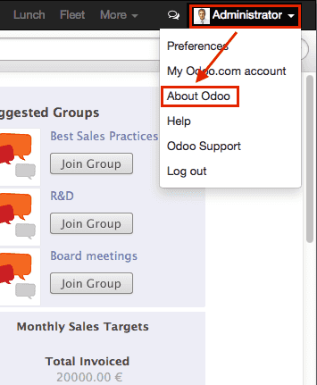

Это руководство о том, как создавать модули для Odoo веб клиента.
Для того, чтобы создавать вебсайт с помощью Odoo, смотрите Создание вебсайта; для того чтобы добавить новые бизнес возможности или расширить существующие в Odoo бизнес системы, смотрите Создание модуля.
Внимание
Это руководство предполагает знание:
- Основы и рекомендации по использованию Javascript
- jQuery
- Underscore.js
так требеуется установленная система Odoo, и Git.
Простой модуль
Давайте наченем с простого модуля, который содержит базовую конфигурацию веб компонентов и позволяет нам тестировать веб-фреймворк.
пример доступен онлайн и может быть скачан с помощью следующей команды:
$ git clone http://github.com/odoo/petstore
Данное действие создаст petstore каталог. Далее вам необходимо добавить этот каталог в
addons path, для Odoo, создать новую базу данных и установить модульoepetstore.
Если вы просмотрие petstore каталог, вы увидете следующие содержимое:
oepetstore
|-- images
| |-- alligator.jpg
| |-- ball.jpg
| |-- crazy_circle.jpg
| |-- fish.jpg
| `-- mice.jpg
|-- __init__.py
|-- oepetstore.message_of_the_day.csv
|-- __openerp__.py
|-- petstore_data.xml
|-- petstore.py
|-- petstore.xml
`-- static
`-- src
|-- css
| `-- petstore.css
|-- js
| `-- petstore.js
`-- xml
`-- petstore.xml
Модуль уже содержит некоторые изменения серверной части. мы вернемся к этому чуть позже, а сейчас давайть сфокусируеся на содержимом каталога static, который связан непосрественно с веб отображением.
Файлы используемые в "web" части Odoo модуля должны быть помещены в каталог static, для того, чтобы они стали доступны из веб-браузереа файлы, находящиеся вне этого каталога, не могут быть получены браузером
напрямую. Подкаталоги src/css, src/js and src/xml не обязаны иметь строго аналогичные названия и имееют такие именя исключительно для удобства разработки.
oepetstore/static/css/petstore.css- пока пуст, будет содержать CSS для контента магазина для животных
oepetstore/static/xml/petstore.xml- Так же почти пуст, будет содержать QWeb шаблон
oepetstore/static/js/petstore.js-
Наиболее важная (и интерестная) часть, содержит логику приложения (или по крайнен мере его веб-браузерную часть) как javascript. Должна выглядеть следующим образом:
openerp.oepetstore = function(instance, local) { var _t = instance.web._t, _lt = instance.web._lt; var QWeb = instance.web.qweb; local.HomePage = instance.Widget.extend({ start: function() { console.log("pet store home page loaded"); }, }); instance.web.client_actions.add( 'petstore.homepage', 'instance.oepetstore.HomePage'); }
Она выводит небольшое сообщение в коносоль веб-браузера.
Внимание
Все JavaScript файлы объеденены и сжаты для снижения времени загрузки приложения.
Одним из недостатков такого подхода является то, что отладка становится более сложной отдельные файлы исчезают и код становится практически не читаемым. Есть возможность отключить данных процесс путем включения "режима разработчика": авторизируйтесь в вашей Odoo системе (логин admin пароль admin по умолчанию) откройте меню пользователя (в правом верхнем углу Odoo экрана) и выбирете About Odoo а затем Activate the developer mode:

Данный механизм перезагрузит клиент с отключенными механизмами оптимизации, что позволит вести разработку и отладку более комфортно.
Odoo JavaScript модуль
Чистый Javascript сам по себе не имеет встроенных модулей. В результате чего переменные определенные в разных файлах могут смешиваться и конфиликтовать. Такая ситуация привела к тому, что стали появляться различные шаблоны модулей, использование которых помзовляет создавать чистые пространства имен с минимальными рисками конфликтов.
Фреймворк Odoo использует такого рода шаблоны для определения модулей внутри своих веб расширений, для уопорядочивания как пространства имен так и правильного порядка загрузки.
oepetstore/static/js/petstore.js содержит объявление модуля:
openerp.oepetstore = function(instance, local) {
local.xxx = ...;
}
В веб части Odoo, модули объявляются как функции присвоенные глобальной переменной openerp. Имя функции должно быть таким же как и расширения(модуля) (в данном случае
oepetstore) для того чтобы фреймворк смог найти ее и автоматически инициализировать.
Когда веб клиент загружает ваш модуль он вызывает корневую(root) функцию и передают ей два параметра:
- первый параметр это текущий экземпляр(инстанс) Odoo веб клиента, это предоставляет доступ к различным возможностям определенными Odoo (переводы, сетевые службы), а так же объектам определенным ядром или другими модулями.
- второй параметр это ваше собственное пространство имен, которое автомтически созадется самим веб клиентом. Список объектов и переменных, которые должны быть доступны вне вашего модуля (либо из-за того что Odoo веб клиенту необходимо вызывать их, либо другие хотят кастомизировать их) должны быть установлены внутри этого пространства имен.
Классы
В отличие от модулей и вопреки большинству объекто-ориентированных языков, javascript не построен на классах classes1 хотя и предоставляет приблизительно эквивалентные (если низкоуровневые и более многословные) мехнанизмы.
Для простоты и удобства разработчиков веб часть Odoo предоставляет систему классовн основанную на Простое наследование JavaScript.
Новые классы определяются вызовом extend() метода класса openerp.web.Class():
var MyClass = instance.web.Class.extend({
say_hello: function() {
console.log("hello");
},
});
Метод extend() принимает словарь, словарь нового класса, в котором содержится описание всего содержимого (методов и статических атрибутов). В данном случаае класс будет иметь только метод say_hello который не принимает параметров.
Экземпляры класс создаются с помощью оператора new:
var my_object = new MyClass();
my_object.say_hello();
// print "hello" in the console
Доступ к атрибута экземпляра может быть получен через this:
var MyClass = instance.web.Class.extend({
say_hello: function() {
console.log("hello", this.name);
},
});
var my_object = new MyClass();
my_object.name = "Bob";
my_object.say_hello();
// print "hello Bob" in the console
Классы могут предоставлять инициализатор для выполнения первоначальной настройки экземпляра, через определение метода init(). Инициализатор принимает параметры, переданны при использовании оператора new:
var MyClass = instance.web.Class.extend({
init: function(name) {
this.name = name;
},
say_hello: function() {
console.log("hello", this.name);
},
});
var my_object = new MyClass("Bob");
my_object.say_hello();
// print "hello Bob" in the console
Так же существует возможность создавать подклассы из существующих (использованны-определенных) классов путем вызова extend() для родительского класса, как это делается для подкласса Class():
var MySpanishClass = MyClass.extend({
say_hello: function() {
console.log("hola", this.name);
},
});
var my_object = new MySpanishClass("Bob");
my_object.say_hello();
// print "hola Bob" in the console
При переопределении метода с использованием наследования вы можете использовать this._super() для вызова оригинального метода:
var MySpanishClass = MyClass.extend({
say_hello: function() {
this._super();
console.log("translation in Spanish: hola", this.name);
},
});
var my_object = new MySpanishClass("Bob");
my_object.say_hello();
// print "hello Bob \n translation in Spanish: hola Bob" in the console
Внимание
_super не является стандарнтым методом, он устанавливаентся "на лету" к следущему метод в текущей цепочке наследования, если таковая имеется. Он определяется только во время синхронных части вызова метода,
для вызова в асинхронных обработчиках (после сетевых вызово или в обратных вызовах setTimeout) ссылку на его значение следует хранить, она не будет доступна через this:
// broken, will generate an error
say_hello: function () {
setTimeout(function () {
this._super();
}.bind(this), 0);
}
// correct
say_hello: function () {
// don't forget .bind()
var _super = this._super.bind(this);
setTimeout(function () {
_super();
}.bind(this), 0);
}
Основы работы с Widget
Odoo веб клиент привязан к jQuery для простой манипуляции DOM моделью. Он полезен и предоставляет API лучше чем стандартный W3C DOM 2, но не достаточный для структурирования комплексных приложений, что приводит к сложностям в обслуживании.
Подобно объектно-ориентированным инструментариям пользовательского интерфейса (например Qt, Cocoa или GTK), Odoo Web назначает отдельные компоненты ответственными за отдельные секции страницы. В Odoo web, базой для таких компонентов является класс
Widget(), специализирующийся на обработке раздела страницы и отображении информации для пользователя.
Ваш первый Widget
В начальном демонстрационном модуле уже есть базовый виджет:
local.HomePage = instance.Widget.extend({
start: function() {
console.log("pet store home page loaded");
},
});
Она расширяет Widget() и переопределяет стандартный метод
start(), который как и предыдущий MyClass — пока еще мало что делает.
Эта строка в конце файла:
instance.web.client_actions.add(
'petstore.homepage', 'instance.oepetstore.HomePage');
регистрирует наш простой виджет как действие клиента. Действия клиента будут объяснены позже, на данный момент это позволяет нашему виджету быть вызванным и показанным когда мы выбираем пункт меню
Внимание
т.к. виджет будет вызываться вне нашего модуля, веб клиенту необходимо его "fully qualified" имя, а не локальная его версия.
Отображение контента
Виджеты имеют ряд методов и функций, но основы просты:
- настройка виджета
- формат данных виджета
- отображение виджета
Виджет HomePage уже имеет метод start(). Этот метод является частью жизненного цикла обычного виджета и автоматически вызывается после добавления виджета на страницу. Мы можем использовать его для отображения необходимого нам контента.
Все виджеты имеют$el который представляет раздел страницы, за который они отвечают (как jQuery объект). Содержимое виджета должно быть вставлено туда. По умолчанию $el является пустым элементом <div>.
Элемент <div> обычно невидим для пользователя, если у него нет контента (или нет определенных стилей, задающих его размер) which поэтому при запуске HomePage ничего не отображается на странице.
Давайте добавим немного контента в root элемент виджета, используя jQuery:
local.HomePage = instance.Widget.extend({
start: function() {
this.$el.append("<div>Hello dear Odoo user!</div>");
},
});
Это сообщение появится когда вы откроете пункт меню
Примечание
для обновления javascript кода, который загружен в Odoo Web, вам необходимо обновить страницу. Нет необходимости перезагружать сервер Odoo.
Виджет HomePage используется и управляется Odoo Web автоматически. Для того, чтобы узнать как создавать виджеты "с нуля" давайте создадим новый:
local.GreetingsWidget = instance.Widget.extend({
start: function() {
this.$el.append("<div>We are so happy to see you again in this menu!</div>");
},
});
Тпеперь мы можем добавить наш GreetingsWidget к HomePage используя метод
GreetingsWidget's appendTo():
local.HomePage = instance.Widget.extend({
start: function() {
this.$el.append("<div>Hello dear Odoo user!</div>");
var greeting = new local.GreetingsWidget(this);
return greeting.appendTo(this.$el);
},
});
- сначала
HomePageдобавляет свое содержимое в корень DOM - затем
HomePageсоздает экземплярGreetingsWidget - И в конце он сообщает
GreetingsWidgetкуда вставлять себя, делегируя часть своего$elGreetingsWidget.
Когда вызывается метод appendTo(), он просит виджет вставить себя в указанную позицию и отобразить свой контент. Методstart() будет вызываться во время вызова appendTo().
Чтобы увидеть, что происходит под отображаемым интерфейсом, мы будем использовать DOM Explorer браузера. Но сначала давайте немного изменим наши виджеты, чтобы мы могли легче находить, где они находятся,
добавив класс к их корневым элементам::
local.HomePage = instance.Widget.extend({
className: 'oe_petstore_homepage',
...
});
local.GreetingsWidget = instance.Widget.extend({
className: 'oe_petstore_greetings',
...
});
Если вы можете найти соответствующий раздел DOM (щелкните правой кнопкой мыши тексте, затем выберите Исследовать Элемент), и вы должны увидеть нечто похожее на:
<div class="oe_petstore_homepage">
<div>Hello dear Odoo user!</div>
<div class="oe_petstore_greetings">
<div>We are so happy to see you again in this menu!</div>
</div>
</div>
Который четко показывает два элемента<div> автоматически созданных Widget(), потому что мы добавили несколько классов в них.
Мы также можем увидеть два div элемента с прикрепленными к ним сообщениями, которые мы добавили сами
Наконец, обратите внимание, что элемент<div class="oe_petstore_greetings"> который представляет экземпляр GreetingsWidget находящийся внутри <div class="oe_petstore_homepage"> предоставленного экземпляра HomePage
Родительские и дочерние объекты Widget
В предыдущей части мы создали экземпляр виджета, используя этот синтаксис:
new local.GreetingsWidget(this);
Первым аргументом является this, который в данном случае был экземпляром HomePage. Это говорит виджету созданному другим виджетом, что он является его родителем.
Как мы видели, виджеты обычно вставляются в DOM другими виджетами и As we've seen, widgets are usually inserted in the DOM by another widget and внутри корнегового элемента виджета. Это означает, что большинство виджетов являются "частью" другого виджета, и существуют от его имени. Мы вызываем родительский контейнер, и помещяем в него дочерний виджет.
Из-за многочисленных технических и концептуальных причин виджету необходимо знать, кто его родительские и кто его дочерние объекты
getParent()-
может быть использовано для получения родительского объекта виджета:
local.GreetingsWidget = instance.Widget.extend({ start: function() { console.log(this.getParent().$el ); // will print "div.oe_petstore_homepage" in the console }, });
getChildren()-
может быть использовано для получения дочернего объекта виджета:
local.HomePage = instance.Widget.extend({ start: function() { var greeting = new local.GreetingsWidget(this); greeting.appendTo(this.$el); console.log(this.getChildren()[0].$el); // will print "div.oe_petstore_greetings" in the console }, });
При переопределении метода init() виджета очень важно передать родительскому элементу вызов this._super(), иначе это отношение будет установлено неверно:
local.GreetingsWidget = instance.Widget.extend({
init: function(parent, name) {
this._super(parent);
this.name = name;
},
});
В конце концов если виджет не имеет родительского объекта (т.к. это корневой виджет приложения), в качестве родител может быть указан null:
new local.GreetingsWidget(null);
Уничтожение виджетов
Если вы можете показать контент вашим пользователям, то вы так же должны имень возможность его удалить. Это достигается с помощью метода destroy():
greeting.destroy();
Когда виджет уничтожается, он сначала вызывает функцию
destroy() всем своим дочерним объектам. А уже потом удаляет себя из DOM.
Если вы установили постоянные структуры в
init() или
start() которые должны быть явно очищены (потому что сборщик мусора не будет их обрабатывать), вы можете переопределить
destroy().
Осторожно
при переопределении destroy(), _super()
должен всегда вызываться иначе виджет и дочерние элементы не будут очищены правильно, оставляя возможные утечки памяти и "фантомные события", даже если ошибка не отображается
Генератор шаблонов QWeb
В предыдущем разделе мы добавляли контент к нашим виджетам, непосредственно манипулируя (и добавляя) их DOM:
this.$el.append("<div>Hello dear Odoo user!</div>");
Такой подход позволяет генерировать и отображать любой тип контента, но становится громоздким при генерации значительных объемов DOM (много повторяющихся действий, проблемы с цитированием, ...))
Как и во многих других средах, решение Odoo заключается в использовании генератора шаблонов. Генератор шаблонов для Odoo называется QWeb. QWeb.
QWeb это язык шаблонов на базе XML, такой же как Genshi, Thymeleaf or Facelets. Он имеет следующие характеристики:
- Он полностью написан на JavaScript и рендерится в браузере
- каждый файл шаблона (XML файлы) может содержать несколько шаблонов
- Он имеет специальную поддержку со стороны Odoo Web
Widget(), хотя он может использоватся и вне Odoo веб клиента (и возможно использоватьWidget()не полагаясь на QWeb)
Примечание
Обоснованием использования QWeb вместо существующих генераторов шаблонов для javascript является расширяемость уже существующих ( а так же произеденных сторонними разработчиками) шаблонов представлений.
Большинство генераторов шаблонов javascript основаны на простом тексте, что исключает упрощенную структурную расширяемость, там где основанный на XML генератор шаблонов может быть расширен такими средствами как XPath или CSS и DSL (или даже XSLT). Гибкость и расширяемость такого рода является основной характеристикой Odoo, и ее утрата считается неприемлемой
Использование QWeb
Для начала давайте определим простой QWeb шаблон в почти пустом файле
oepetstore/static/src/xml/petstore.xml:
<?xml version="1.0" encoding="UTF-8"?>
<templates xml:space="preserve">
<t t-name="HomePageTemplate">
<div style="background-color: red;">This is some simple HTML</div>
</t>
</templates>
Теперь мы можем использовать этот шаблон внутри виджета HomePage. Используя переменную загрузчика QWeb определенную в верхней части страницы, мы можем вызвать шаблон определенный в XML файле:
local.HomePage = instance.Widget.extend({
start: function() {
this.$el.append(QWeb.render("HomePageTemplate"));
},
});
QWeb.render() ищет определенный шаблон преобразовывает в строку и возвращает результат.
Однако, поскольку Widget() имеет специальную интеграцию для QWeb, шаблон можно установить непосредственно в виджете через его атрибут шаблона :
local.HomePage = instance.Widget.extend({
template: "HomePageTemplate",
start: function() {
...
},
});
Хотя результат выглядит похожим, между этими подходами есть два различия:
- во второй версией, шаблон выдается непосредственно перед вызовом
start() - в первой версии содержимое шаблона добавляется к корневому элементу виджета, тогда как во второй версии корневой элемент шаблона сразу устанавливается как корневой элемент виджета. Вот почему вспомогательный виджет "привествия" также получает красный фон
Внимание
Шаблоны должны иметь один корневой элемент без-t, особенно если они установлены как шаблоны виджета . Если емееся несколько "корневых элементов", результаты не определены (обычно используется только первый корневой элемент, а остальные будут игнорироваться)
QWeb контекст
Шаблонам QWeb могут быть предоставлены данные и они могут содержать базовую логику отображения.
Для явных вызовов QWeb.render(), данные шаблона передаются как второй параметр:
QWeb.render("HomePageTemplate", {name: "Klaus"});
с измененным шаблоном::
<t t-name="HomePageTemplate">
<div>Hello <t t-esc="name"/></div>
</t>
будет следующий результат:
<div>Hello Klaus</div>
При использовании интеграции Widget() не представляется возможным предоставить дополнительные данные шаблону. Шаблон будет иметь единственную контекстную переменную виджетов, ссылающуюся на виджет, отображаемый непосредственно перед вызовом метода start() (состояние виджета будет по существу состоять в том, что установленоinit()):
<t t-name="HomePageTemplate">
<div>Hello <t t-esc="widget.name"/></div>
</t>
local.HomePage = instance.Widget.extend({
template: "HomePageTemplate",
init: function(parent) {
this._super(parent);
this.name = "Mordecai";
},
start: function() {
},
});
Result:
<div>Hello Mordecai</div>
Объявление шаблона
Мы увидели как происходит визуализация шаблона QWeb, теперь давайте посмотри синтаксис самих шаблонов.
Шаблон QWeb состоит из обычного XML, смешанного с дериктивами QWeb. Директива QWeb объявляется с атрибутами XML, начинающимися с t-.
Самая простая директива это t-name, используемая для объявления новых шаблонов используемых в файле:
<templates>
<t t-name="HomePageTemplate">
<div>This is some simple HTML</div>
</t>
</templates>
t-name принимает имя определяемого шаблона и объявляет таким образом, что его можно вызвать с помощью QWeb.render(). Его можно использовать только на верхнем уровне файла шаблона.
Вывод данных
Директива t-esc может быть использована для вывода текста:
<div>Hello <t t-esc="name"/></div>
Он принимает вычисляемно выражение Javascript, а затем его результат помещается в HTML-код и вставляется в документ. Поскольку это выражение, то можно указать только имя переменной, как показано выше, или более сложное выражение, например какое либо вычисление:
<div><t t-esc="3+5"/></div>
или вызов метода:
<div><t t-esc="name.toUpperCase()"/></div>
Вывод HTML
Чтобы внедрить HTML-код на отображаемую страницу, используйте t-raw. Подобно t-esc он принимает произвольное Javascript-выражение как параметр, но не выполняет шаг HTML-escape.
<div><t t-raw="name.link(user_account)"/></div>
Осторожно
t-raw не должен использоваться для данных, которые могут содержать небезопасный пользовательский контент так как это приводит к уязвимостям межсайтового скриптинга
Состояния
QWeb может иметь состояния используя блок t-if. Директива принимает произвольное выражение, если выражение не существует (false, null, 0 или пустая строка) весь блок подавляется, в противном случае он отображается.
<div>
<t t-if="true == true">
true is true
</t>
<t t-if="true == false">
true is not true
</t>
</div>
Примечание
QWeb не имеет "else" структутуры, используйте второй t-if с инвертированным первоначальным условием. Вы можете захотеть сохранить условие в локальной переменной, если это сложное или дорогое выражение.
Перебор значений
Для перебора значений по списку используйтеt-foreach и t-as. t-foreach принимает выражение, возвращающее список для итерации по t-as беря имя переменной для привязки к каждому элементу во время итерации.
<div>
<t t-foreach="names" t-as="name">
<div>
Hello <t t-esc="name"/>
</div>
</t>
</div>
Примечание
t-foreach так же может быть использован с числами и объектами (словарями)
Определение атрибутов
QWeb предоставляет две связанные директивы для определения вычисленных атрибутов:
t-att-name и t-attf-name. В любом случае, name это имя создаваемого атрибута(например t-att-id определяет
id атрибута после визуализации).
t-att- принимает выражение javascript, результат которого устанавливается как значение атрибута, наиболее полезно, если вычисляется все значение атрибута:
<div>
Input your name:
<input type="text" t-att-value="defaultName"/>
</div>
t-attf- принимает строковый формат. Строковый формат это текст с интерполяционными блоками внутриo интерполяционный блок - это javascript-выражение между {{ и }}, который будет заменен результатом выражения. Это особенно полезно для атрибутов, которые частично имеют текстовые значения и частично вычисляемые, например класс:
<div t-attf-class="container {{ left ? 'text-left' : '' }} {{ extra_class }}">
insert content here
</div>
Вызов других шаблонов
Шаблоны можно разбить на подшаблоны (для простоты, управляемости, многократного использования или во избежание чрезмерной перегрузки разметки).
Это реализовано с помощью t-call директивы, которая принимает имя шаблона для визуализации:
<t t-name="A">
<div class="i-am-a">
<t t-call="B"/>
</div>
</t>
<t t-name="B">
<div class="i-am-b"/>
</t>
визуализация A а шаблона даст результат:
<div class="i-am-a">
<div class="i-am-b"/>
</div>
Суб-шаблоны наследуют контекст при визуализации вызывающего их объекта..
Для более глубокого изучения QWeb
Для подробной справки по QWeb смотрите QWeb.
Упражнение
Упражнение
Использование QWeb в Widget
Создайте виджет, конструктор которого имеет два параметра помимо
родителя: product_names и color.
product_namesдолжен быть массивом строк, каждая из которых - название продуктаcolorстрока содержащая цвет в CSS цветовом формате (например:#000000для черного).
Виджет должен отображать названия продуктов друг под другом, каждый в отдельном поле с цветом фона и значением
color и границы. Вы должны использовать QWeb для визуализации HTML. Все что касается CSS должно находится в oepetstore/static/src/css/petstore.css.
Используйте виджет в HomePage с полдюжиной продуктов.
openerp.oepetstore = function(instance, local) {
var _t = instance.web._t,
_lt = instance.web._lt;
var QWeb = instance.web.qweb;
local.HomePage = instance.Widget.extend({
start: function() {
var products = new local.ProductsWidget(
this, ["cpu", "mouse", "keyboard", "graphic card", "screen"], "#00FF00");
products.appendTo(this.$el);
},
});
local.ProductsWidget = instance.Widget.extend({
template: "ProductsWidget",
init: function(parent, products, color) {
this._super(parent);
this.products = products;
this.color = color;
},
});
instance.web.client_actions.add(
'petstore.homepage', 'instance.oepetstore.HomePage');
}
<?xml version="1.0" encoding="UTF-8"?>
<templates xml:space="preserve">
<t t-name="ProductsWidget">
<div>
<t t-foreach="widget.products" t-as="product">
<span class="oe_products_item"
t-attf-style="background-color: {{ widget.color }};">
<t t-esc="product"/>
</span>
<br/>
</t>
</div>
</t>
</templates>
.oe_products_item {
display: inline-block;
padding: 3px;
margin: 5px;
border: 1px solid black;
border-radius: 3px;
}
{kind=link}
Помощники для Widget
jQuery Selector для Widget
Выбор элементов DOM внутри виджетов можно выполнить, вызвав метод find ()
find() в корне DOM виджета:
this.$el.find("input.my_input")...
Но поскольку это обычная операция, Widget() предоставляет эквивалентный ярлык через метод the
$():
local.MyWidget = instance.Widget.extend({
start: function() {
this.$("input.my_input")...
},
});
Внимание
Глобальная функция jQuery $() никогда не должна использоваться, если она абсолютно не нужна: выбор в корне виджета относится к виджету и локален к нему, но выбор с $() является глобальным для страницы / приложения и может соответствовать частям других виджетов и представлений, поэтому его использование можем привести к случайным или опасным побочным эффектам. Поскольку виджет вообще должен действовать только в разделе DOM, который он имеет, поэтому нет причин для применения механизмов глобального выбора.
Простое связывание DOM событий
Ранее мы связывали события DOM с помощью обычных обработчиков событий jQuery (например,
.click() или .change()) на элементах виджета:
local.MyWidget = instance.Widget.extend({
start: function() {
var self = this;
this.$(".my_button").click(function() {
self.button_clicked();
});
},
button_clicked: function() {
..
},
});
Хотя это метод и работает, у него есть несколько проблем:
- он довольно многословный
- он не поддерживает замену корневого элемента виджета во время выполнения, поскольку привязка выполняется только при запуске
start()(во время инициализации виджета) - он требует ршения
this-связанных проблем
Таким образом, виджеты предоставляют ярлык привязки события DOM через
события:
local.MyWidget = instance.Widget.extend({
events: {
"click .my_button": "button_clicked",
},
button_clicked: function() {
..
}
});
События - это объект (отображение) события в функцию или метод для вызова, когда событие инициируется:
- ключ - это имя события, которое может быть уточнено с помощью селектора CSS, и в этом случае, только если событие произойдет в выбранном подэлементе, будет выполняться функция или метод:
clickбудет обрабатывать все клики внутри виджета, ноclick .my_buttonбудет обрабатывать только клики в элементах с классомmy_button -
значение - это действие, которое должно выполняться при срабатывании события
это может быть либо функция:
events: { 'click': function (e) { /* code here */ } }
или имя метода объекта (см. пример выше).
В любом случае
thisявляется экземпляром виджета, а обработчику предоставляется единственный параметр объект события jQuery для события.
События и свойства виджета
События
Виджеты предоставляют систему событий (отдельно от системы событий DOM / jQuery, описанной выше): виджет может сам запускать события, а другие виджеты (или он сам) могут связываться к вышеуказанному виджету и прослушивать эти события:
local.ConfirmWidget = instance.Widget.extend({
events: {
'click button.ok_button': function () {
this.trigger('user_chose', true);
},
'click button.cancel_button': function () {
this.trigger('user_chose', false);
}
},
start: function() {
this.$el.append("<div>Are you sure you want to perform this action?</div>" +
"<button class='ok_button'>Ok</button>" +
"<button class='cancel_button'>Cancel</button>");
},
});
Этот виджет выступает в роли фасада, преобразуя входные данные пользователя (через события DOM) во внутреннее событие, для которого родительские виджеты могут связывать себя.
trigger() берет имя события для запуска в качестве его первого (обязательного) аргумента, любые дополнительные аргументы рассматриваются как данные события и передаются непосредственно слушателям.
Затем мы можем настроить родительское событие, создающее экземпляр нашего общего виджета, и прослушивать событие user_chose спользуя метод on():
local.HomePage = instance.Widget.extend({
start: function() {
var widget = new local.ConfirmWidget(this);
widget.on("user_chose", this, this.user_chose);
widget.appendTo(this.$el);
},
user_chose: function(confirm) {
if (confirm) {
console.log("The user agreed to continue");
} else {
console.log("The user refused to continue");
}
},
});
on() связывает функцию, вызываемую, когда событие, идентифицировано event_name. Аргумент func это функция для вызова object - объект, которым связана эта функция, если это метод. Связанная функция будет вызываться с дополнительными аргументами trigger() Если она есть. Пример:
start: function() {
var widget = ...
widget.on("my_event", this, this.my_event_triggered);
widget.trigger("my_event", 1, 2, 3);
},
my_event_triggered: function(a, b, c) {
console.log(a, b, c);
// will print "1 2 3"
}
Примечание
Запуск событий на другом виджетах, как правило, плохая идея. Главным исключением из этого правила является openerp.web.bus который существует специально для трансляций, в которых любой виджет может интересоваться всем веб-приложением Odoo.
Свойства
Свойства очень похожи на обычные атрибуты объектов, поскольку они позволяют хранить данные в экземпляре виджетов, однако у них есть дополнительная функция, при которой они запускают события при установке:
start: function() {
this.widget = ...
this.widget.on("change:name", this, this.name_changed);
this.widget.set("name", "Nicolas");
},
name_changed: function() {
console.log("The new value of the property 'name' is", this.widget.get("name"));
}
set()устанавливает значение свойства и запускаетchange:propname(где propname это имя свойства, переданное в качестве первого параметра дляset()) andchangeget()получает значение свойства.
Упражнение
Упражнение
Свойства и события виджета
Создайте виджетColorInputWidget который будет отображать 3 <input type="text">. Каждый из этих <input> предназначен для ввода шестнадцатеричного числа от 00 до FF. Когда какой-либо из этих <input> изменяется пользователем, виджет должен запрашивать содержимое трех
<input>, соединять их значения, чтобы иметь полный цветовой код CSS (например: #00FF00) и поместить результат в свойство с именем color. Обратите внимание, что событие jQuery change() которое вы можете привязать к любому элементу HTML <input> и метод val()который может запрашивать текущее значение этого <input> могут быть полезны для вас в этом упражнении.
Затем измените виджет HomePage чтобы создать экземпляр ColorInputWidget и отобразите его. Виджет HomePage также должен отображать пустой прямоугольник.Этот прямоугольник должен всегда, в любой момент, иметь тот же цвет фона, что и цвет в свойстве color экземпляра ColorInputWidget .
Используйте QWeb для генерации всего HTML.
openerp.oepetstore = function(instance, local) {
var _t = instance.web._t,
_lt = instance.web._lt;
var QWeb = instance.web.qweb;
local.ColorInputWidget = instance.Widget.extend({
template: "ColorInputWidget",
events: {
'change input': 'input_changed'
},
start: function() {
this.input_changed();
return this._super();
},
input_changed: function() {
var color = [
"#",
this.$(".oe_color_red").val(),
this.$(".oe_color_green").val(),
this.$(".oe_color_blue").val()
].join('');
this.set("color", color);
},
});
local.HomePage = instance.Widget.extend({
template: "HomePage",
start: function() {
this.colorInput = new local.ColorInputWidget(this);
this.colorInput.on("change:color", this, this.color_changed);
return this.colorInput.appendTo(this.$el);
},
color_changed: function() {
this.$(".oe_color_div").css("background-color", this.colorInput.get("color"));
},
});
instance.web.client_actions.add('petstore.homepage', 'instance.oepetstore.HomePage');
}
<?xml version="1.0" encoding="UTF-8"?>
<templates xml:space="preserve">
<t t-name="ColorInputWidget">
<div>
Red: <input type="text" class="oe_color_red" value="00"></input><br />
Green: <input type="text" class="oe_color_green" value="00"></input><br />
Blue: <input type="text" class="oe_color_blue" value="00"></input><br />
</div>
</t>
<t t-name="HomePage">
<div>
<div class="oe_color_div"></div>
</div>
</t>
</templates>
.oe_color_div {
width: 100px;
height: 100px;
margin: 10px;
}
Изменение существующих виджетов и классов
Система классов веб-фреймворка Odoo позволяет напрямую модифицировать существующие классы с помощью метода include():
var TestClass = instance.web.Class.extend({
testMethod: function() {
return "hello";
},
});
TestClass.include({
testMethod: function() {
return this._super() + " world";
},
});
console.log(new TestClass().testMethod());
// will print "hello world"
Эта система похожа на механизм наследования, за исключением того, что она изменит целевой класс прямо на месте вместо того, чтобы создавать новый.
В этом случае this._super() будет вызывать оригинальную реализацию заменяемого / переопределяемого метода. Если у класса уже есть подклассы, все вызовы this._super() в подклассах вызовут новые реализации, определенные в вызове include(). Это также будет работать, если некоторые экземпляры класса (или любого из его подклассов) были созданы до вызова include().
Система переводов на другие языки
Процесс преобразования текста в код Python и JavaScript очень похож. Вы могли заметить эти строки в начале файла petstore.js:
var _t = instance.web._t,
_lt = instance.web._lt;
Эти строки просто используются для импорта функций перевода в текущий модуль JavaScript. Они используются следующим образом:
this.$el.text(_t("Hello user!"));
В Odoo файлы переводов автоматически генерируются путем сканирования исходного кода. Обнаружен весь кусок кода, вызывающий определенную функцию, и их содержимое добавляется в файл перевода, который затем отправляется переводчикам. В Python, это функция _(). В JavaScript это функция _t() (и еще _lt()).
Функция _t() возвращает перевод, определенный для текста, который задан. Если для этого текста не определен перевод, то она вернет исходный текст как есть.
Примечание
Чтобы вводить пользовательские значения в переносимые строки, рекомендуется использовать_.str.sprintf с именованными аргументами после перевода:
this.$el.text(_.str.sprintf(
_t("Hello, %(user)s!"), {
user: "Ed"
}));
Это делает переводы более удобочитаемыми для переводчиков и дает им большую гибкость для изменения порядка или игнорирования параметров.
_lt() ("ленивый перевод") похож, но несколько более сложен: вместо перевода его параметра сразу, он возвращает объект, который при преобразовании в строку будет выполнять перевод.
Данный механизм используется для определения переводимых терминов до инициализации системы переводов, например, для атрибутов класса (поскольку модули загружаются до того, как язык пользователя настроен и загружены переводы)
Связь с сервером Odoo
Взаимодействие с моделями данных
Большинство операций с Odoo связаны со взаимодействием с моделями данных, реализующими бизнес-логику, и эти модели данных будут (потенциально) взаимодействовать с какой либо системой хранения (обычно PostgreSQL).
Хотя jQuery и предоставляет функцию $.ajax для сетевого взаимодейтсвия, для связи с Odoo требуются дополнительные метаданные настройка которых перед каждым вызовом будет многословной и подверженной ошибкам. В результат веб клиент Odoo предоставляет примитивы связи более высокого уровня.
Чтобы продемонстрировать это, файл petstore.py aуже содержит небольшую модель с примером метода:
class message_of_the_day(models.Model):
_name = "oepetstore.message_of_the_day"
@api.model
def my_method(self):
return {"hello": "world"}
message = fields.Text(),
color = fields.Char(size=20),
В этом примере объявлена модель данных с двумя полями, и методом my_method() который возвращает словарь литералов.
Вот пример виджета, который вызывает my_method() и отображает результат:
local.HomePage = instance.Widget.extend({
start: function() {
var self = this;
var model = new instance.web.Model("oepetstore.message_of_the_day");
model.call("my_method", {context: new instance.web.CompoundContext()}).then(function(result) {
self.$el.append("<div>Hello " + result["hello"] + "</div>");
// will show "Hello world" to the user
});
},
});
Класс, используемый для вызова моделей Odooopenerp.Model().Он создается с именем модели Odoo в качестве первого параметра (
oepetstore.message_of_the_day в нашем случае).
call() можно использовать для вызова любого (публичного) метода модели Odoo. Он принимает следующие позиционные аргументы:
name- Имя вызваемого метода,
my_method args-
массив позиционных аргументов для предоставления метода.Поскольку пример не имеет позиционного аргумента, параметр
argsне предоставляется.Вот другой пример с позиционными аргументами:
@api.model def my_method2(self, a, b, c): ...
model.call("my_method", [1, 2, 3], ... // with this a=1, b=2 and c=3
kwargs-
a mapping of keyword arguments to pass. The example provides a single named argument
context.@api.model def my_method2(self, a, b, c): ...
model.call("my_method", [], {a: 1, b: 2, c: 3, ... // with this a=1, b=2 and c=3
call() returns a deferred resolved with the value returned by the model's method as first argument.
CompoundContext
The previous section used a context argument which was not explained in the method call:
model.call("my_method", {context: new instance.web.CompoundContext()})
The context is like a "magic" argument that the web client will always give to the server when calling a method. The context is a dictionary containing multiple keys. One of the most important key is the language of the user, used by the server to translate all the messages of the application. Another one is the time zone of the user, used to compute correctly dates and times if Odoo is used by people in different countries.
The argument is necessary in all methods, otherwise bad things could happen (such as the application not being translated correctly). That's why, when you call a model's method, you should always provide that argument.
The solution to achieve that is to use openerp.web.CompoundContext().
CompoundContext() is a class used to pass the user's context (with language, time zone, etc...) to the server as well as adding new keys to the context (some models' methods use arbitrary keys
added to the context). It is created by giving to its constructor any number of dictionaries or other CompoundContext() instances. It will merge all those contexts before sending them to the
server.
model.call("my_method", {context: new instance.web.CompoundContext({'new_key': 'key_value'})})
@api.model
def my_method(self):
print self.env.context
// will print: {'lang': 'en_US', 'new_key': 'key_value', 'tz': 'Europe/Brussels', 'uid': 1}
You can see the dictionary in the argument context contains some keys that are related to the configuration of the current user in Odoo plus the
new_key key that was added when instantiating
CompoundContext().
Queries
While call() is sufficient for any interaction with Odoo models, Odoo Web provides
a helper for simpler and clearer querying of models (fetching of records based on various conditions):
query() which acts as a shortcut for the common combination of
search() and :
read(). It provides a clearer syntax to search and read models:
model.query(['name', 'login', 'user_email', 'signature'])
.filter([['active', '=', true], ['company_id', '=', main_company]])
.limit(15)
.all().then(function (users) {
// do work with users records
});
versus:
model.call('search', [['active', '=', true], ['company_id', '=', main_company]], {limit: 15})
.then(function (ids) {
return model.call('read', [ids, ['name', 'login', 'user_email', 'signature']]);
})
.then(function (users) {
// do work with users records
});
query()takes an optional list of fields as parameter (if no field is provided, all fields of the model are fetched). It returns aopenerp.web.Query()which can be further customized before being executedQuery()represents the query being built. It is immutable, methods to customize the query actually return a modified copy, so it's possible to use the original and the new version side-by-side. SeeQuery()for its customization options.
When the query is set up as desired, simply call
all() to execute it and return a deferred to its result. The result
is the same as
read()'s, an array of dictionaries where each dictionary is a requested
record, with each requested field a dictionary key.
Exercises
Exercise
Message of the Day
Create a MessageOfTheDay widget displaying the last record of the
oepetstore.message_of_the_day model. The widget should fetch its record as soon as it is displayed.
Display the widget in the Pet Store home page.
openerp.oepetstore = function(instance, local) {
var _t = instance.web._t,
_lt = instance.web._lt;
var QWeb = instance.web.qweb;
local.HomePage = instance.Widget.extend({
template: "HomePage",
start: function() {
return new local.MessageOfTheDay(this).appendTo(this.$el);
},
});
instance.web.client_actions.add('petstore.homepage', 'instance.oepetstore.HomePage');
local.MessageOfTheDay = instance.Widget.extend({
template: "MessageOfTheDay",
start: function() {
var self = this;
return new instance.web.Model("oepetstore.message_of_the_day")
.query(["message"])
.order_by('-create_date', '-id')
.first()
.then(function(result) {
self.$(".oe_mywidget_message_of_the_day").text(result.message);
});
},
});
}
<?xml version="1.0" encoding="UTF-8"?>
<templates xml:space="preserve">
<t t-name="HomePage">
<div class="oe_petstore_homepage">
</div>
</t>
<t t-name="MessageOfTheDay">
<div class="oe_petstore_motd">
<p class="oe_mywidget_message_of_the_day"></p>
</div>
</t>
</templates>
.oe_petstore_motd {
margin: 5px;
padding: 5px;
border-radius: 3px;
background-color: #F0EEEE;
}
Exercise
Pet Toys List
Create a PetToysList widget displaying 5 toys (using their name and their images).
The pet toys are not stored in a new model, instead they're stored in
product.product using a special category Pet Toys. You can see the pre-generated toys and add new ones by going to
. You will probably need to explore product.product to create the right domain to select just pet toys.
In Odoo, images are generally stored in regular fields encoded as
base64, HTML supports displaying images straight from base64 with
<img src="data:mime_type;base64,base64_image_data"/>
The PetToysList widget should be displayed on the home page on the right of the MessageOfTheDay widget. You will need to make some layout with CSS to achieve this.
openerp.oepetstore = function(instance, local) {
var _t = instance.web._t,
_lt = instance.web._lt;
var QWeb = instance.web.qweb;
local.HomePage = instance.Widget.extend({
template: "HomePage",
start: function () {
return $.when(
new local.PetToysList(this).appendTo(this.$('.oe_petstore_homepage_left')),
new local.MessageOfTheDay(this).appendTo(this.$('.oe_petstore_homepage_right'))
);
}
});
instance.web.client_actions.add('petstore.homepage', 'instance.oepetstore.HomePage');
local.MessageOfTheDay = instance.Widget.extend({
template: 'MessageOfTheDay',
start: function () {
var self = this;
return new instance.web.Model('oepetstore.message_of_the_day')
.query(["message"])
.order_by('-create_date', '-id')
.first()
.then(function (result) {
self.$(".oe_mywidget_message_of_the_day").text(result.message);
});
}
});
local.PetToysList = instance.Widget.extend({
template: 'PetToysList',
start: function () {
var self = this;
return new instance.web.Model('product.product')
.query(['name', 'image'])
.filter([['categ_id.name', '=', "Pet Toys"]])
.limit(5)
.all()
.then(function (results) {
_(results).each(function (item) {
self.$el.append(QWeb.render('PetToy', {item: item}));
});
});
}
});
}
<?xml version="1.0" encoding="UTF-8"?>
<templates xml:space="preserve">
<t t-name="HomePage">
<div class="oe_petstore_homepage">
<div class="oe_petstore_homepage_left"></div>
<div class="oe_petstore_homepage_right"></div>
</div>
</t>
<t t-name="MessageOfTheDay">
<div class="oe_petstore_motd">
<p class="oe_mywidget_message_of_the_day"></p>
</div>
</t>
<t t-name="PetToysList">
<div class="oe_petstore_pettoyslist">
</div>
</t>
<t t-name="PetToy">
<div class="oe_petstore_pettoy">
<p><t t-esc="item.name"/></p>
<p><img t-att-src="'data:image/jpg;base64,'+item.image"/></p>
</div>
</t>
</templates>
.oe_petstore_homepage {
display: table;
}
.oe_petstore_homepage_left {
display: table-cell;
width : 300px;
}
.oe_petstore_homepage_right {
display: table-cell;
width : 300px;
}
.oe_petstore_motd {
margin: 5px;
padding: 5px;
border-radius: 3px;
background-color: #F0EEEE;
}
.oe_petstore_pettoyslist {
padding: 5px;
}
.oe_petstore_pettoy {
margin: 5px;
padding: 5px;
border-radius: 3px;
background-color: #F0EEEE;
}
Existing web components
The Action Manager
In Odoo, many operations start from an action: opening a menu item (to a view), printing a report, ...
Actions are pieces of data describing how a client should react to the activation of a piece of content. Actions can be stored (and read through a model) or they can be generated on-the fly (locally to the client by javascript code, or remotely by a method of a model).
In Odoo Web, the component responsible for handling and reacting to these actions is the Action Manager.
Using the Action Manager
The action manager can be invoked explicitly from javascript code by creating a dictionary describing an action of the right type, and calling an action manager instance with it.
do_action() is a shortcut of Widget() looking up
the "current" action manager and executing the action:
instance.web.TestWidget = instance.Widget.extend({
dispatch_to_new_action: function() {
this.do_action({
type: 'ir.actions.act_window',
res_model: "product.product",
res_id: 1,
views: [[false, 'form']],
target: 'current',
context: {},
});
},
});
The most common action type is ir.actions.act_window which provides views to a model (displays a model in various manners), its most common attributes are:
res_model- The model to display in views
res_id(optional)- For form views, a preselected record in
res_model views- Lists the views available through the action. A list of
[view_id, view_type],view_idcan either be the database identifier of a view of the right type, orfalseto use the view by default for the specified type. View types can not be present multiple times. The action will open the first view of the list by default. target- Either
current(the default) which replaces the "content" section of the web client by the action, ornewto open the action in a dialog box. context- Additional context data to use within the action.
Exercise
Jump to Product
Modify the PetToysList component so clicking on a toy replaces the homepage by the toy's form view.
local.PetToysList = instance.Widget.extend({
template: 'PetToysList',
events: {
'click .oe_petstore_pettoy': 'selected_item',
},
start: function () {
var self = this;
return new instance.web.Model('product.product')
.query(['name', 'image'])
.filter([['categ_id.name', '=', "Pet Toys"]])
.limit(5)
.all()
.then(function (results) {
_(results).each(function (item) {
self.$el.append(QWeb.render('PetToy', {item: item}));
});
});
},
selected_item: function (event) {
this.do_action({
type: 'ir.actions.act_window',
res_model: 'product.product',
res_id: $(event.currentTarget).data('id'),
views: [[false, 'form']],
});
},
});
<t t-name="PetToy">
<div class="oe_petstore_pettoy" t-att-data-id="item.id">
<p><t t-esc="item.name"/></p>
<p><img t-attf-src="data:image/jpg;base64,{{item.image}}"/></p>
</div>
</t>
Client Actions
Throughout this guide, we used a simple HomePage widget which the web client automatically starts when we select the right menu item. But how did the Odoo web know to start this widget? Because the widget is registered
as a client action.
A client action is (as its name implies) an action type defined almost entirely in the client, in javascript for Odoo web. The server simply sends an action tag (an arbitrary name), and optionally adds a few parameters, but beyond that everything is handled by custom client code.
Our widget is registered as the handler for the client action through this:
instance.web.client_actions.add('petstore.homepage', 'instance.oepetstore.HomePage');
instance.web.client_actions is a Registry() in which the action manager looks up client action handlers when it needs to execute one. The first parameter of add() is the name (tag) of the client action, and the second parameter is the path to the widget from the Odoo web client root.
When a client action must be executed, the action manager looks up its tag in the registry, walks the specified path and displays the widget it finds at the end.
Note
a client action handler can also be a regular function, in whch case it'll be called and its result (if any) will be interpreted as the next action to execute.
On the server side, we had simply defined an ir.actions.client action:
<record id="action_home_page" model="ir.actions.client">
<field name="tag">petstore.homepage</field>
</record>
and a menu opening the action:
<menuitem id="home_page_petstore_menu" parent="petstore_menu"
name="Home Page" action="action_home_page"/>
Architecture of the Views
Much of Odoo web's usefulness (and complexity) resides in views. Each view type is a way of displaying a model in the client.
The View Manager
When an ActionManager instance receive an action of type
ir.actions.act_window, it delegates the synchronization and handling of the views themselves to a view manager, which will then set up one or multiple views depending on the original action's requirements:

The Views
Most Odoo views are implemented through a subclass of openerp.web.View() which provides a bit of generic
basic structure for handling events and displaying model information.
The search view is considered a view type by the main Odoo framework, but handled separately by the web client (as it's a more permanent fixture and can interact with other views, which regular views don't do).
A view is responsible for loading its own description XML (using
fields_view_get) and any other data source it
needs. To that purpose, views are provided with an optional view identifier set as the view_id attribute.
Views are also provided with a DataSet() instance which holds most necessary model information (the model name and possibly various record ids).
Views may also want to handle search queries by overriding
do_search(), and updating their
DataSet() as necessary.
The Form View Fields
A common need is the extension of the web form view to add new ways of displaying fields.
All built-in fields have a default display implementation, a new form widget may be necessary to correctly interact with a new field type (e.g. a GIS field) or to provide new representations and ways to interact with existing field types (e.g. validate
Char fields which should contain email addresses and display them as email links).
To explicitly specify which form widget should be used to display a field, simply use the widget attribute in the view's XML description:
<field name="contact_mail" widget="email"/>
Note
- the same widget is used in both "view" (read-only) and "edition" modes of a form view, it's not possible to use a widget in one and an other widget in the other
- and a given field (name) can not be used multiple times in the same form
- a widget may ignore the current mode of the form view and remain the same in both view and edition
Fields are instantiated by the form view after it has read its XML description and constructed the corresponding HTML representing that description. After that, the form view will communicate with the field objects using some methods.
These methods are defined by the FieldInterface interface. Almost all fields inherit the AbstractField abstract class. That class defines some default mechanisms that need to be implemented by most fields.
Here are some of the responsibilities of a field class:
- The field class must display and allow the user to edit the value of the field.
-
It must correctly implement the 3 field attributes available in all fields of Odoo. The
AbstractFieldclass already implements an algorithm that dynamically calculates the value of these attributes (they can change at any moment because their value change according to the value of other fields). Their values are stored in Widget Properties (the widget properties were explained earlier in this guide). It is the responsibility of each field class to check these widget properties and dynamically adapt depending of their values. Here is a description of each of these attributes:required: The field must have a value before saving. Ifrequiredistrueand the field doesn't have a value, the methodis_valid()of the field must returnfalse.invisible: When this istrue, the field must be invisible. TheAbstractFieldclass already has a basic implementation of this behavior that fits most fields.readonly: Whentrue, the field must not be editable by the user. Most fields in Odoo have a completely different behavior depending on the value ofreadonly. As example, theFieldChardisplays an HTML<input>when it is editable and simply displays the text when it is read-only. This also means it has much more code it would need to implement only one behavior, but this is necessary to ensure a good user experience.
- Fields have two methods,
set_value()andget_value(), which are called by the form view to give it the value to display and get back the new value entered by the user. These methods must be able to handle the value as given by the Odoo server when aread()is performed on a model and give back a valid value for awrite(). Remember that the JavaScript/Python data types used to represent the values given byread()and given towrite()is not necessarily the same in Odoo. As example, when you read a many2one, it is always a tuple whose first value is the id of the pointed record and the second one is the name get (ie:(15, "Agrolait")). But when you write a many2one it must be a single integer, not a tuple anymore.AbstractFieldhas a default implementation of these methods that works well for simple data type and set a widget property namedvalue.
Please note that, to better understand how to implement fields, you are strongly encouraged to look at the definition of the FieldInterface interface and the AbstractField class directly in the code of the
Odoo web client.
Creating a New Type of Field
In this part we will explain how to create a new type of field. The example here will be to re-implement the FieldChar class and progressively explain each part.
Simple Read-Only Field
Here is a first implementation that will only display text. The user will not be able to modify the content of the field.
local.FieldChar2 = instance.web.form.AbstractField.extend({
init: function() {
this._super.apply(this, arguments);
this.set("value", "");
},
render_value: function() {
this.$el.text(this.get("value"));
},
});
instance.web.form.widgets.add('char2', 'instance.oepetstore.FieldChar2');
In this example, we declare a class named FieldChar2 inheriting from
AbstractField. We also register this class in the registry
instance.web.form.widgets under the key char2. That will allow us to use this new field in any form view by specifying widget="char2" in the
<field/> tag in the XML declaration of the view.
In this example, we define a single method: render_value(). All it does is display the widget property value. Those are two tools defined by the
AbstractField class. As explained before, the form view will call the method set_value() of the field to set the value to display. This method already has a default implementation in AbstractField which simply sets the widget property value. AbstractField also watch the
change:value event on itself and calls the render_value() when it occurs. So, render_value() is a convenience method to implement in child classes to perform some operation each time the value
of the field changes.
In the init() method, we also define the default value of the field if none is specified by the form view (here we assume the default value of a
char field should be an empty string).
Read-Write Field
Read-only fields, which only display content and don't allow the user to modify it can be useful, but most fields in Odoo also allow editing. This makes the field classes more complicated, mostly because fields are supposed to handle both editable and non-editable mode, those modes are often completely different (for design and usability purpose) and the fields must be able to switch between modes at any moment.
To know in which mode the current field should be, the AbstractField class sets a widget property named effective_readonly. The field should watch for changes in that widget property and display the correct
mode accordingly. Example:
local.FieldChar2 = instance.web.form.AbstractField.extend({
init: function() {
this._super.apply(this, arguments);
this.set("value", "");
},
start: function() {
this.on("change:effective_readonly", this, function() {
this.display_field();
this.render_value();
});
this.display_field();
return this._super();
},
display_field: function() {
var self = this;
this.$el.html(QWeb.render("FieldChar2", {widget: this}));
if (! this.get("effective_readonly")) {
this.$("input").change(function() {
self.internal_set_value(self.$("input").val());
});
}
},
render_value: function() {
if (this.get("effective_readonly")) {
this.$el.text(this.get("value"));
} else {
this.$("input").val(this.get("value"));
}
},
});
instance.web.form.widgets.add('char2', 'instance.oepetstore.FieldChar2');
<t t-name="FieldChar2">
<div class="oe_field_char2">
<t t-if="! widget.get('effective_readonly')">
<input type="text"></input>
</t>
</div>
</t>
In the start() method (which is called immediately after a widget has been appended to the DOM), we bind on the event change:effective_readonly. That allows us to redisplay the field each time the widget property
effective_readonly changes. This event handler will call
display_field(), which is also called directly in start(). This
display_field() was created specifically for this field, it's not a method defined in AbstractField or any other class. We can use this method to display the content of the field depending on the current
mode.
From now on the conception of this field is typical, except there is a lot of verifications to know the state of the effective_readonly property:
- In the QWeb template used to display the content of the widget, it displays an
<input type="text" />if we are in read-write mode and nothing in particular in read-only mode. - In the
display_field()method, we have to bind on thechangeevent of the<input type="text" />to know when the user has changed the value. When it happens, we call theinternal_set_value()method with the new value of the field. This is a convenience method provided by theAbstractFieldclass. That method will set a new value in thevalueproperty but will not trigger a call torender_value()(which is not necessary since the<input type="text" />already contains the correct value). - In
render_value(), we use a completely different code to display the value of the field depending if we are in read-only or in read-write mode.
Exercise
Create a Color Field
Create a FieldColor class. The value of this field should be a string containing a color code like those used in CSS (example: #FF0000 for red). In read-only mode, this color field should display a little
block whose color corresponds to the value of the field. In read-write mode, you should display an <input type="color" />. That type of <input /> is an HTML5 component that doesn't
work in all browsers but works well in Google Chrome. So it's OK to use as an exercise.
You can use that widget in the form view of the message_of_the_day model for its field named color. As a bonus, you can change the
MessageOfTheDay widget created in the previous part of this guide to display the message of the day with the background color indicated in the
color field.
local.FieldColor = instance.web.form.AbstractField.extend({
events: {
'change input': function (e) {
if (!this.get('effective_readonly')) {
this.internal_set_value($(e.currentTarget).val());
}
}
},
init: function() {
this._super.apply(this, arguments);
this.set("value", "");
},
start: function() {
this.on("change:effective_readonly", this, function() {
this.display_field();
this.render_value();
});
this.display_field();
return this._super();
},
display_field: function() {
this.$el.html(QWeb.render("FieldColor", {widget: this}));
},
render_value: function() {
if (this.get("effective_readonly")) {
this.$(".oe_field_color_content").css("background-color", this.get("value") || "#FFFFFF");
} else {
this.$("input").val(this.get("value") || "#FFFFFF");
}
},
});
instance.web.form.widgets.add('color', 'instance.oepetstore.FieldColor');
<t t-name="FieldColor">
<div class="oe_field_color">
<t t-if="widget.get('effective_readonly')">
<div class="oe_field_color_content" />
</t>
<t t-if="! widget.get('effective_readonly')">
<input type="color"></input>
</t>
</div>
</t>
.oe_field_color_content {
height: 20px;
width: 50px;
border: 1px solid black;
}
The Form View Custom Widgets
Form fields are used to edit a single field, and are intrinsically linked to a field. Because this may be limiting, it is also possible to create form widgets which are not so restricted and have less ties to a specific lifecycle.
Custom form widgets can be added to a form view through the widget tag:
<widget type="xxx" />
This type of widget will simply be created by the form view during the creation of the HTML according to the XML definition. They have properties in common with the fields (like the effective_readonly property) but they
are not assigned a precise field. And so they don't have methods like
get_value() and set_value(). They must inherit from the FormWidget abstract class.
Form widgets can interact with form fields by listening for their changes and fetching or altering their values. They can access form fields through their field_manager attribute:
local.WidgetMultiplication = instance.web.form.FormWidget.extend({
start: function() {
this._super();
this.field_manager.on("field_changed:integer_a", this, this.display_result);
this.field_manager.on("field_changed:integer_b", this, this.display_result);
this.display_result();
},
display_result: function() {
var result = this.field_manager.get_field_value("integer_a") *
this.field_manager.get_field_value("integer_b");
this.$el.text("a*b = " + result);
}
});
instance.web.form.custom_widgets.add('multiplication', 'instance.oepetstore.WidgetMultiplication');
FormWidget is generally the
FormView() itself, but features used from it should be limited to those defined by FieldManagerMixin(), the most useful being:
get_field_value(field_name)()which returns the value of a field.set_values(values)()sets multiple field values, takes a mapping of{field_name: value_to_set}- An event
field_changed:field_nameis triggered any time the value of the field calledfield_nameis changed
Exercise
Show Coordinates on Google Map
Add two fields to product.product storing a latitude and a longitude, then create a new form widget to display the latitude and longitude of a product's origin on a map
To display the map, use Google Map's embedding:
<iframe width="400" height="300" src="https://maps.google.com/?ie=UTF8&ll=XXX,YYY&output=embed">
</iframe>
where XXX should be replaced by the latitude and YYY by the longitude.
Display the two position fields and a map widget using them in a new notebook page of the product's form view.
local.WidgetCoordinates = instance.web.form.FormWidget.extend({
start: function() {
this._super();
this.field_manager.on("field_changed:provider_latitude", this, this.display_map);
this.field_manager.on("field_changed:provider_longitude", this, this.display_map);
this.display_map();
},
display_map: function() {
this.$el.html(QWeb.render("WidgetCoordinates", {
"latitude": this.field_manager.get_field_value("provider_latitude") || 0,
"longitude": this.field_manager.get_field_value("provider_longitude") || 0,
}));
}
});
instance.web.form.custom_widgets.add('coordinates', 'instance.oepetstore.WidgetCoordinates');
<t t-name="WidgetCoordinates">
<iframe width="400" height="300"
t-attf-src="https://maps.google.com/?ie=UTF8&ll={{latitude}},{{longitude}}&output=embed">
</iframe>
</t>
Exercise
Get the Current Coordinate
Add a button resetting the product's coordinates to the location of the user, you can get these coordinates using the javascript geolocation API.
Now we would like to display an additional button to automatically set the coordinates to the location of the current user.
To get the coordinates of the user, an easy way is to use the geolocation JavaScript API. See the online documentation to know how to use it.
Please also note that the user should not be able to click on that button when the form view is in read-only mode. So, this custom widget should handle correctly the effective_readonly property just like any field.
One way to do this would be to make the button disappear when effective_readonly is true.
local.WidgetCoordinates = instance.web.form.FormWidget.extend({
events: {
'click button': function () {
navigator.geolocation.getCurrentPosition(
this.proxy('received_position'));
}
},
start: function() {
var sup = this._super();
this.field_manager.on("field_changed:provider_latitude", this, this.display_map);
this.field_manager.on("field_changed:provider_longitude", this, this.display_map);
this.on("change:effective_readonly", this, this.display_map);
this.display_map();
return sup;
},
display_map: function() {
this.$el.html(QWeb.render("WidgetCoordinates", {
"latitude": this.field_manager.get_field_value("provider_latitude") || 0,
"longitude": this.field_manager.get_field_value("provider_longitude") || 0,
}));
this.$("button").toggle(! this.get("effective_readonly"));
},
received_position: function(obj) {
this.field_manager.set_values({
"provider_latitude": obj.coords.latitude,
"provider_longitude": obj.coords.longitude,
});
},
});
instance.web.form.custom_widgets.add('coordinates', 'instance.oepetstore.WidgetCoordinates');
<t t-name="WidgetCoordinates">
<iframe width="400" height="300"
t-attf-src="https://maps.google.com/?ie=UTF8&ll={{latitude}},{{longitude}}&output=embed">
</iframe>
<button>Get My Current Coordinate</button>
</t>